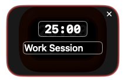
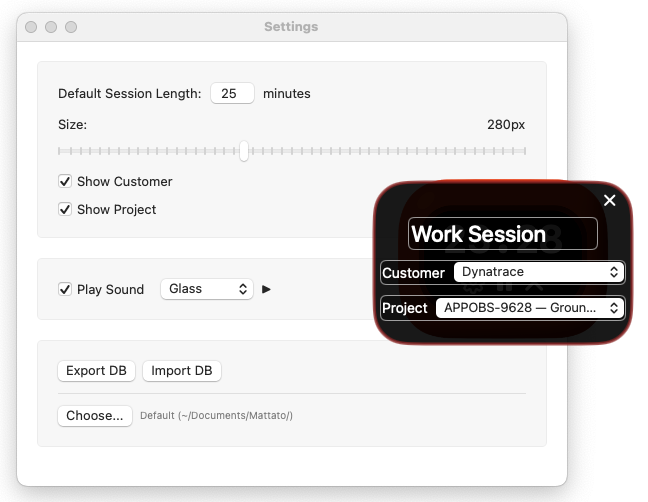

Table of Contents
Timer
The desktop timer shows session duration and remaining time. Click the play button to start timing.
Edit the Timer
- Session length - Adjust timer duration before starting
- Description - Add notes about what you're working on
- Customer/Project dropdowns - Add info if enabled - see Projects and Customers
Reset the Timer
The X button appears when timer is running or paused. Click to stop and discard the current session.
Sessions & Exporting
Export Options
- Bear - Creates note in Bear app with session details
- PDF - Professional invoice format, split by customer when selected
- CSV - Spreadsheet format for further analysis
- ICS - Calendar events for time tracking systems
- JSON - Structured data format for APIs and integrations
Bulk Edit
- Round and Flatten - Expands sessions to fill time chunks (15min/30min/1hr). Sessions get rounded to the chunk they started in. When multiple sessions fall in same chunk, keeps the second one.
- Inject Sessions - Fills gaps between work hours with new sessions. Useful for creating complete timesheets.
- Destroy Sessions - Deletes all sessions within specified time ranges. Permanently removes overlapping sessions.
Settings
- Default Session Length - Starting timer duration for new sessions
- Size slider - Adjusts desktop timer window size
- Show Customer/Project toggles - Enables dropdown menus in timer interface
- Export/Import DB - Backup and restore all session data
Projects and Customers
Create lists of customers and projects for session organization. Enable the toggles in Settings to show these dropdowns in the timer interface. Essential for PDF invoicing which splits sessions by customer.